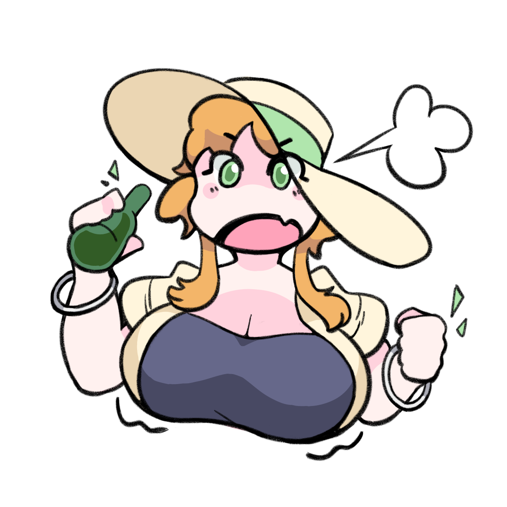

kitsumitsu.de
七醋米醋.的
- Space OCs
- Rural China Softies Village
The kitsumitsuverse is a collection of original characters that I post drawings of on Twitter. You may include them in your own work provided you give due credit, and preferrably mention me @kitsumitsu46!
Cpt. Domba
| Likes: | Starry skies at night, cuddling |
|---|---|
| Weight: | 285lb (earth), 47lb (moon) |
| Fluency: | Ndelendi (native), English (learned), Standard Chinese (learned as part of the New Worlds program) |
As the captain of her ship, she can often be found exploring moons as part of the New Worlds program—their reduced gravity has led to her (rather accidentally) putting on some weight. When not working, she likes to take naps in her ship and catch up on Earth media.

Dr. Gao
高医生
| Likes: | Working, listening in on conversations she's not a part of |
|---|---|
| Fluency: | Standard Chinese (native) |
Assigned to Domba's ship as part of the New Worlds program, Dr. Gao is a talented Chinese scientist, though not a human one. She serves as the Head of R&D—mainly focusing on the acquisition and application of lunar data, though she holds expertise in all sorts of sciences from electrical engineering to biology to medicine. Additionally, she helps solve the problem of who is going to fix the ion thrusters when they go offline.

Xi Xu
昔旭
| Weight: | 198lb |
|---|
She operates the village drugstore, which basically means leaning back on a plastic chair in a small off-white brick room, drinking, and yelling at people out the window. You know those big coolers with the glass tops they have out the front of gas stations? Her store has one, though for whatever reason it's seldom stocked...
© 2023 Kitsumitsu46. All Rights Reserved.